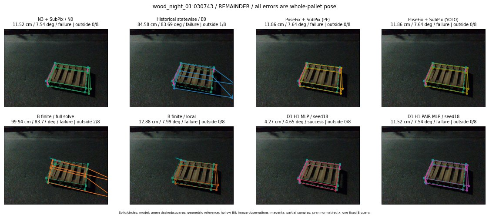

Whole-pallet pose errors; reference is a fixed geometric annotation, not certified physical GT.

Scores are uncalibrated logits. N0 retention is a numerical pose alias; it differs from H0 none or B fallback. B/I and profiles in baseline/B panels are original observations; L panels use new D1 observations. Only one deterministic supported B query is shown in a thumbnail; full support counts are below. Grey privacy rectangles edit the display copy only and are unrelated to O states; all observations were measured on original pixels. Thumbnails use JPEG quality85; detailed scientific panels are PNG.
| Method | Whole pose / cm, deg | Actual source | Selected ID | Score | Archived candidates | Eligible | N0 retained | H0 none | Fallback | Finite profiles |
|---|---|---|---|---|---|---|---|---|---|---|
| Raw YOLO + F | 14.39 cm / 7.63 deg / failure | OTHER | None | N/A | N/A | N/A | False | N/A | None | N/A |
| N3 + SubPix / N0 | 11.52 cm / 7.54 deg / failure | N0 | None | N/A | N/A | N/A | True | N/A | None | N/A |
| Historical statewise / E0 | 84.58 cm / 83.69 deg / failure | E0_REGENERATED | None | N/A | N/A | N/A | False | N/A | False | N/A |
| PoseFix raw | 13.21 cm / 7.55 deg / failure | OTHER | None | N/A | N/A | N/A | False | N/A | None | N/A |
| PoseFix + SubPix (PF) | 11.86 cm / 7.64 deg / failure | OTHER | None | N/A | N/A | N/A | False | N/A | False | historical support records 9; finite audit N/A |
| PoseFix + SubPix (YOLO) | 11.86 cm / 7.64 deg / failure | OTHER | None | N/A | N/A | N/A | False | N/A | False | historical support records 9; finite audit N/A |
| Historical L, seed18 | 11.52 cm / 7.54 deg / failure | N0 | N0 | N/A | 55 | 55 | True | True | True | N/A |
| Historical B fixed bank | 73.06 cm / 83.74 deg / failure | OTHER | G13/SWAPPED_WD/sample/1 | N/A | N/A | N/A | False | N/A | False | N/A |
| Historical B full | 100.39 cm / 82.94 deg / failure | OTHER | NEW/B/SWAPPED_WD/h0/LOGGED/G13/SWAPPED_WD/outline_consider/31/PROPOSED_NATIVE_YAW_0 | N/A | N/A | N/A | False | N/A | False | N/A |
| Historical edge full | 4.56 cm / 39.39 deg / failure | OTHER | NEW/edge/ORIGINAL_WD/h0/LOGGED/G13/ORIGINAL_WD/outline_consider/25/PROPOSED_NATIVE_YAW_0 | N/A | N/A | N/A | False | N/A | False | N/A |
| Historical AB full | 21.31 cm / 40.76 deg / failure | OTHER | NEW/AB/ORIGINAL_WD/h0/LOGGED/G13/ORIGINAL_WD/outline_consider/25/PROPOSED_NATIVE_YAW_0 | N/A | N/A | N/A | False | N/A | False | N/A |
| B finite / fixed bank | 73.06 cm / 83.74 deg / failure | OTHER | G13/SWAPPED_WD/sample/1 | N/A | N/A | N/A | False | N/A | False | 3/3 |
| B finite / full solve | 99.94 cm / 83.77 deg / failure | OTHER | NEW_FINITE/B/SWAPPED_WD/h0/LOGGED/G13/SWAPPED_WD/outline_consider/31/PROPOSED_NATIVE_YAW_0 | N/A | N/A | N/A | False | N/A | False | 3/3 |
| B finite / local | 12.88 cm / 7.99 deg / failure | OTHER | NEW_FINITE/B/ORIGINAL_WD/h0/N0_LOCAL_SAME_PHYSICAL_POSE/ORIGINAL_WD | N/A | N/A | N/A | False | N/A | False | 3/3 |
| Edge finite / full solve | 99.21 cm / 73.15 deg / failure | OTHER | NEW_FINITE/edge/SWAPPED_WD/h0/LOGGED/G13/SWAPPED_WD/outline_consider/31/PROPOSED_NATIVE_YAW_0 | N/A | N/A | N/A | False | N/A | False | 3/3 |
| D0 H0 MLP / seed18 | 11.52 cm / 7.54 deg / failure | N0 | N0 | 2.3510851860046387 | 24 | 24 | True | True | True | N/A |
| D0 H0 MLP / seed19 | 11.52 cm / 7.54 deg / failure | N0 | N0 | 3.737147331237793 | 24 | 24 | True | True | True | N/A |
| D0 H0 MLP / seed20 | 11.52 cm / 7.54 deg / failure | N0 | N0 | -1.229994535446167 | 24 | 24 | True | True | True | N/A |
| D0 H1 MLP / seed18 | 4.27 cm / 4.65 deg / success | OTHER | WD0/ORIGINAL_WD/selected | -3.8640966415405273 | 24 | 24 | False | False | False | N/A |
| D0 H1 MLP / seed19 | 4.27 cm / 4.65 deg / success | OTHER | WD0/ORIGINAL_WD/selected | -3.3508880138397217 | 24 | 24 | False | False | False | N/A |
| D0 H1 MLP / seed20 | 4.27 cm / 4.65 deg / success | OTHER | WD0/ORIGINAL_WD/selected | -5.412437915802002 | 24 | 24 | False | False | False | N/A |
| D1 H0 MLP / seed18 | 11.52 cm / 7.54 deg / failure | N0 | N0 | 6.751219272613525 | 24 | 24 | True | True | True | N/A |
| D1 H0 MLP / seed19 | 11.52 cm / 7.54 deg / failure | N0 | N0 | 7.724222183227539 | 24 | 24 | True | True | True | N/A |
| D1 H0 MLP / seed20 | 11.52 cm / 7.54 deg / failure | N0 | N0 | 6.721559047698975 | 24 | 24 | True | True | True | N/A |
| D1 H1 MLP / seed18 | 4.27 cm / 4.65 deg / success | OTHER | WD0/ORIGINAL_WD/selected | -2.9932167530059814 | 24 | 24 | False | False | False | N/A |
| D1 H1 MLP / seed19 | 4.27 cm / 4.65 deg / success | OTHER | WD0/ORIGINAL_WD/selected | -3.046870470046997 | 24 | 24 | False | False | False | N/A |
| D1 H1 MLP / seed20 | 4.27 cm / 4.65 deg / success | OTHER | WD0/ORIGINAL_WD/selected | -3.777714967727661 | 24 | 24 | False | False | False | N/A |
| D1 H1 ROLE AFFINE / seed18 | 11.52 cm / 7.54 deg / failure | N0 | N0 | -1.3644073009490967 | 24 | 24 | True | False | False | N/A |
| D1 H1 ROLE AFFINE / seed19 | 11.52 cm / 7.54 deg / failure | N0 | N0 | -1.0868107080459595 | 24 | 24 | True | False | False | N/A |
| D1 H1 ROLE AFFINE / seed20 | 11.52 cm / 7.54 deg / failure | N0 | N0 | -1.17922043800354 | 24 | 24 | True | False | False | N/A |
| D1 H1 PAIR MLP / seed18 | 11.52 cm / 7.54 deg / failure | N0 | N0 | -2.1664531230926514 | 24 | 2 | True | False | False | N/A |
| D1 H1 PAIR MLP / seed19 | 11.52 cm / 7.54 deg / failure | N0 | N0 | -2.1223857402801514 | 24 | 2 | True | False | False | N/A |
| D1 H1 PAIR MLP / seed20 | 11.52 cm / 7.54 deg / failure | N0 | N0 | -2.790475845336914 | 24 | 2 | True | False | False | N/A |
| D1 H1 PAIR ROLE AFFINE / seed18 | 11.52 cm / 7.54 deg / failure | N0 | N0 | -1.1126422882080078 | 24 | 2 | True | False | False | N/A |
| D1 H1 PAIR ROLE AFFINE / seed19 | 11.52 cm / 7.54 deg / failure | N0 | N0 | -1.3387503623962402 | 24 | 2 | True | False | False | N/A |
| D1 H1 PAIR ROLE AFFINE / seed20 | 11.52 cm / 7.54 deg / failure | N0 | N0 | -0.9242860078811646 | 24 | 2 | True | False | False | N/A |
| Regenerated common E0 | 84.58 cm / 83.69 deg / failure | E0_REGENERATED | E0_REGENERATED | N/A | N/A | N/A | False | N/A | False | N/A |